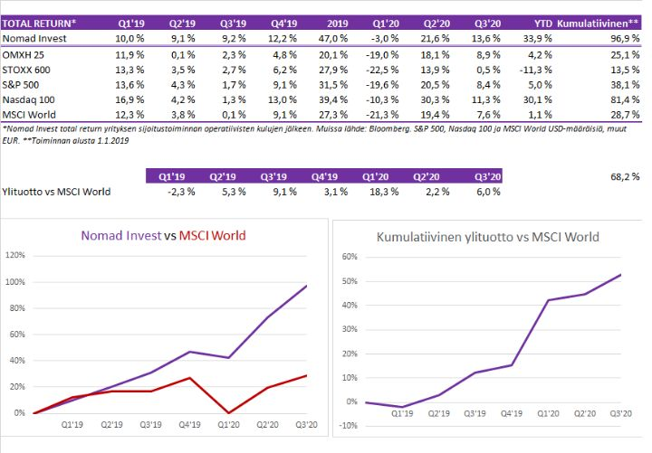

Q3 – Ilmastonmuutos, takinkääntö ja pienet suomalaisyhtiöt
Sisältö:
1. Mennyt neljännes
2. Taistelu ilmastonmuutosta vastaan kiihtyy — Sijoitusvaikutukset
3. Melko suuri osakepaino ja takinkääntö
4. Suomesta löytyy järkevästi arvostettua osakkeita
1. Mennyt neljännes
Kolmannen neljänneksen kokonaistuotoksi muodostui kulujen jälkeen 13,6 % ja koko alkuvuoden tuotoksi 33,9 %. Vastaavat tuottoluvut OMXH25 8,9 % ja 4,2 % sekä MSCI World 7,6 % ja 1,1 %.

Kolmas vuosineljännes oli perusvarmaa suorittamista. Positioiden koot olivat maltillisia ja nettopaino osakkeissa vaihteli 0–50 % välillä, ollen keskimäärin noin 35 %.
Parhaita caseja neljänneksellä olivat:
- Cargotec. Yhtiölle tuli vuosineljänneksen aikana paljon positiivista uutisvirtaa. Odotuksia parempi toisen neljänneksen tulos ja ohjeistuksen palauttaminen nostivat osakekurssia. Näemme myös fuusion Konecranesin kanssa positiivisena, mutta luovuimme osakkeesta, kun synergiat hinnoiteltiin melko täysmääräisesti osakkeeseen.
- Metso Outotec. Pahin aliarvostus suhteessa verrokkeihin purkautui, mutta osake säilyy salkussamme.
- Hopea. Omistimme hopeaa, koska sen arvo suhteessa kultaan oli poikkeuksellisen matala, ja koska hopealla on tapana kerran tai kaksi vuosikymmenessä nousta voimakkaasti. Kotiutimme 2/3 hopeasta, kun sen hinta alkoi lähestyä 30 dollaria per unssi.
- Korkealla lentävien osakkeiden shorttaus. Kun teknologiaosakkeiden osakkeet vaikuttivat voittamattomilta, myimme lyhyeksi osaa kaikkein korkealentoisimmista tarinoista.
Epäonnistumisia:
- Suljimme shortin Nikolaan, kun se teki sopimuksen General Motorsin kanssa. Seuraavina päivinä osakkeen tarina alkoi luhistua ja osake yli puolittui lyhyessä ajassa.
2. Taistelu ilmastonmuutosta vastaan kiihtyy — Sijoitusvaikutukset
Kehitys sähköautoissa on viime vuosina kiihtynyt ja asenteet sähköautoja kohtaan parantuneet. Näin on sekä kuluttajien että valmistajien keskuudessa. Viimeisen vuoden aikana sijoittajat, yritykset ja maiden hallitukset ovat kiihdyttäneet taistelua ilmastonmuutosta vastaan.
Lisäksi velkaelvytyksen Pandoran lippaan avaaminen poistaa rajoitteita budjeteista. Jos nyt jotenkin taloutta elvytämme nollakoroilla, miksei saman tien tehtäisi isoja liikkeitä ilmastonmuutosta vastaan. Se johtaa luultavasti myös tehottomiin investointeihin. Mutta myös 1990-luvun lopun teknokuplan aikainen yli-investointi esimerkiksi tietoverkkoihin edisti lopulta internetin ja mobiili-internetin vallankumousta. Samoin nyt hetkellisesti tehottoman näköiset investoinnit sähköautoihin, uusiutuvaan energiaan ja vihreään vallankumoukseen voivat lopulta kantaa hedelmää.
Ajatteli ilmastonmuutoksesta mitä tahansa, teeman huomiotta jättämisellä on luultavasti negatiivisia vaikutuksia salkkuun, koska muut sijoittajat vaikuttavat nyt ottavan ilmastonmuutoksen tosissaan.
Jossain määrin ilmastonmuutoksen vastaisen taistelun eturintamassa olevissa yrityksien arvostuksissa näkyy jo kuplintaa pinnan alla. Tällaisten yhtiöiden kysyntä sijoittajilta tuntuu ylittävän tarjonnan, ja nostaa näin hintoja.
Olemme miettineet miten päästä mukaan vielä teemaan ilman ylihintojen maksamista. Ja toisaalta miten huomioida energian vallankumous niin, ettei omat omistukset ainakaan kärsisi siitä. Tulevaisuuden tarkka ennustaminen osoittautuu varmasti taas lähes mahdottomaksi, mutta jotain yleisiä linjoja voitaneen hahmotella. Tässä meidän ajatuksiamme käynnissä olevasta energiamuutoksesta:
2.1. Akkumetallit ja kaivosteollisuus
2.2 Öljyteollisuuden auringonlasku lähestyy
2.3 Latausinfrastuktuuri ja energia
2.4 Uusiutuva energia ja uusiutuvat materiaalit
2.5 Vety
2.6 Sähköautojen valmistajat
2.1 Akkumetallit ja kaivosteollisuus
Kaivoslaitevalmistajien ja itse kaivosyhtiöiden osakkeet eivät hinnoittele merkittäviä lisätuloja akkumetallien tarpeesta. Kuparin, nikkelin, koboltin, litiumin ja muiden akkumetallien kysyntä voi yllättää ylöspäin. Metallien louhiminen tuskin saa samanlaista huomiota kuin kuumat EV-startupit, mutta ”hakut ja lapiot” voivat lopulta olla tämänkin kultakuumeen voittajia.
Meillä on salkussa Bolidenia, Lundin Miningia ja Metso Outotecia. Ensi vuoden EV/EBIT kertoimet yhtiöille ovat 9, 8 ja 10,5 aiemmassa järjestyksessä. Vapaan kassavirran tuotto ennustetaan olevan 7 %, 7,9 % ja 7,3 %. Kun pitkät korot ovat nollassa, nämä eivät näytä kalliilta. Edellisille yhtiöille tärkein metalli on kupari. Metso Outotec toki vain toimittaa laitteita.
Nikkelin odotetaan nousevan entistä tärkeämmäksi akkumetalliksi, koska koboltin saatavuudessa, hinnassa ja eettisyydessä on ongelmia. Nikkeliyhtiöistä omistamme Venäjältä MMC Norilsk Nickeliä, Australiasta Wester Areasta ja Japanista Sumitomo Metal Miningia (enemmän jatkojalostus kuin kaivosteollisuus).
Metallien tarjonta yleensä vastaa hinnannousuihin kuten litiumissa on viime vuosina nähty. Mutta jos osakkeiden hinnoissa ei ole mitään kasvuodotuksia, niin edes jonkinlainen tulosten kasvu voi tuoda hyviä kurssinousuja. Lisäksi Nikkelin tuotannon lisääminen etenkin akkuihin soveltuvan nikkeliluokan suhteen on haasteellisempaa kuin litiumissa.
Viimeisimmässä vuosineljännespuhelussaan Elon Musk sanoi sen aika suoraan: “I’d just like to re-emphasize, any mining companies out there, please mine more nickel”
Toki jatkuvasti parantuva kierrätys myös vähentää metallien kysyntää. Toisaalta maailman väestö ja keskiluokka kasvaa tasaisesti, ja ihmiset haluavat aina vain parempaa elintasoa kasvattaen kulutustaan. Raaka-aineiden kysyntä ei ole enää vuosiin ollut kiinni länsimaista.
Jos uskoo edes pieneen häntäriskiin inflaation suhteen, ei metallituottajien omistaminen ole historiallisesti ollut kovin huono idea. Toisaalta akkuteknologian kehittymistä ja sähköautojen yleistymisvauhtia on melko vaikea ennustaa. Mutta osakkeet vaikuttavat muutenkin järkevästi hinnoitelluilta, ja niissä on tosiaan optionaalisuutta autojen sähköistymisen myötä. Alaa ei ole pidetty kovin ESG-myönteisenä, mutta akkumetallien tuottaminen voi auttaa siihenkin jossain määrin. Koska kaivosteollisuuden arvostustasot ovat historiallista tasoa alhaisempia, voisi tuottoa tulla sekä tulosten että arvostusten nousun kautta.
Itse akuissa LG Chem, Panasonic ja CATL ovat mielenkiintoisia seurattavia, mutta emme omista osakkeita yhtiöissä. Osakkeet hinnoittelevat kysynnän kasvua toisin kuin kaivososakkeet.
2.2 Öljyteollisuuden auringonlasku lähestyy
Olemme hieman varovaisia öljy-yhtiöiden kanssa, vaikka ne tosiaan näyttävät hyvin edullisilta.
- Öljyn kulutuksen kasvu kääntyy aiemmin kuin olemme aiemmin ajatelleen. Ennustaminen on vaikeaa, mutta kasvun kääntyminen laskuun jo kuluvan vuosikymmenen loppupuolella näyttää todennäköisemmältä. Vaikka öljyntuottajat näyttävät hyvin halvoilta, ne voivatkin olla lopulta oikein hinnoiteltuja hyvin ”halvoiksi”. Silti seuraavan viiden vuoden aikana voimme nähdä viimeisen öljyn suuremman nousukauden, koska investoinnit alalla ovat jäissä alhaisen hinnan ja synkän tulevaisuuden takia.
- Vaikka meillä on positiivinen näkemys seuraavan viiden vuoden öljyn hinnasta, öljyfutuurit voivat olla parempi tapa ottaa tähän näkemystä kuin öljyntuottajat. Toisaalta öljyntuottajat ovat jo todella alas painettuja, joten sieltäkin on varmasti mahdollista tehdä löytöjä. Siinäkin on kuitenkin hyvä ottaa huomioon vastuullisuus. Kanadan öljyhiekan hiili- ja ekologinen jalanjälki on melko paljon suurempi kuin hiilineutraaliuteen pyrkivällä norjalaisella öljynporaajalla. Maailma (toivottavasti) ottaa askelia kohti kokonaisvaltaista hiiliverotusta, jolloin epätehokkaimpien yhtiöiden toiminta voi olla vaakalaudalla, vaikka öljystä tuskin pääsemme eroon tulevina vuosikymmeninä.
2.3 Latausinfrastruktuuri ja energiatuotanto
Sähköautojen latausinfrastruktuuria valmistavat yhtiöt kuten Alfen ja Garo ovat mielenkiintoisia, mutta osakkeet eivät ole halpoja. Vaikka yleisiä latauspisteitä tarvitaan Eurooppaankin satoja tuhansia, ei niissä rahaa tule liikkumaan siinä määrin kuin energiantuotannossa ja itse sähköautoissa. Ja kilpailussa ovat mukana myös ABB:n kaltaiset jätit.
Liikenteen sähköistyminen antaa tukea länsimaiden sähkönkulutukselle. Fortum on meidän suurin sijoituksemme energia-alalla. Jos yhtiö myisi Venäjän toiminnot, valtaosa Fortumin sähköntuotannosta olisi uusiutuvaa. Tulos laskisi, mutta valuaation nousu luultavasti olisi isompi tekijä nostaen osaketta. Nollakorkoympäristössä ja sähkön kysynnän laskun tasaantuessa, pääasiassa uusiutuvaa energiaa tuottava ja vakaa yhtiö ansaitsisi 20-kertaisen hinnan suhteessa tulokseen.
Puhtaan energian tuottaminen ei ole ainoa tapa vähentää hiilidioksidipäästöjä. Myös energiaa säästävien tuotteiden ja palveluiden tarjoajat ovat saaneet ja saavat varmaan jatkossakin preemiohinnoittelun verrattuna vähemmän tehokkaisiin vaihtoehtoihin.
Ostimme norjalaista Aker Carbon Capture -osaketta 6,3 NOK hinnalla. Yhtiö pyrkii kaappaamaan hiilidioksidia tehtaiden päästöistä, nesteyttää hiilipäästöt ja hautaa ne maan alle. Yhtiö ei ole suinkaan ainoa, joka yrittää tätä tehdä. Mutta toimiala on luonnollisesti hyvin kiinnostava ESG-sijoittajalle, ja osake ainoa listattu pure play. Jotain alan kuumuudesta kertoo, että osake oli oston jälkeen alle viikossa 60 % kalliimpi. Myimme suurimman osan omistuksestamme, mutta jäimme seurantaposition kanssa odottamaan hinnan rauhoittumista hieman alemmaksi.
Tällaisen osakkeen hintaa on lähes mahdottoman tuntuista hinnoitella. Se ei välttämättä tuota ikinä penniäkään voittoa tai sitten hinta voi kuplaantua kymmenkertaiseksi. Ehkä tällaisia osakkeita pitää ajatella momentumin kautta, ja pitää osaketta niin kauan kuin uutisvirta on positiivista ja osake nousee. Arvosijoittajan aivot vain haraavat vastaan. Ehkä pitäisi ajatella enemmän kuten George Soros aikoinaan: “When I see a bubble forming, I rush to buy, adding fuel to the fire”.
2.4 Uusiutuva energia ja uusiutuvat materiaalit
ESG-sijoittajat ovat ajaneet nämä osakkeet melko korkeille arvostuksille suhteessa historiallisiin tasoihin. On vaikea nähdä, että Orstedin, Vestasin ja Scatec Solarin kaltaiset täysin uusiutuvaan energiaan panostavat yhtiöt laskisivat niin merkittävästi, että tuotto-odotus olisi erinomainen. Sen sijaan yritämme etsiä yhtiöitä, joilla uusiutuva energia korvaa jatkossa likaisempaa, eikä se vielä näy osakkeen hinnoittelussa (Esim. salkussa Subsea 7). Merkittävästi öljyalaa palveleva yhtiö Aker on hyvä esimerkki. Se loi merkittävästi lisäarvoa osakkeeseensa listaamalla Aker Carbon Capture ja Aker Offshore Wind -yhtiönsä pörssiin tänä syksynä.
Viime vuosina myös metsäyhtiöt ovat nousseet ESG-sijoittajien kiikariin. Suurina ja vastuullisina metsänomistajina osakekurssit ovat saaneet tukea. Suurten metsäomistusten arvoa on nostettu etenkin ruotsalaisyhtiöissä. Emme olisi yllättyneitä, jos myös suomalaisyhtiöt nostaisivat metsäomistustensa arvoa lähivuoisina. Sekä Stora Enso että UPM ovat mielenkiintoisia, jos osakkeiden hinnat laskevat. Yhtiöiden metsäomistukset, Stora Enson uusiutuvat materiaalit ja UPM:n tuleva biojalostamo tuovat jatkossa tukea yhtiöiden arvolle.
2.5 Vety
Viimeisen puolen vuoden aikana innostus vetyä kohtaan on ollut suurta. Hype yhtiöiden ympärillä saa meidät varovaiseksi. Vedyssä on paljon hyviä puolia ja poliittista tukea. Mutta myös paljon epävarmuutta.
- Vedyn käytön energiahukka on suurta, eikä meillä ole rajattomasti ylimääräistä uusiutuvaa energiaa. Vedyllä on roolinsa ilmastonmuutoksen torjumisessa, mutta se tuskin ottaa pääosaa. Jotta vety nousisi akkuteknologian rinnalle, meillä pitäisi olla paljon ylikapasiteettia puhtaasta energiasta.
- Vetyteknologian voi käydä kuten aurinkoenergiassa — laitevalmistuksesta tulee bulkkituotantoa, jossa kukaan ei tee kovin paljoa rahaa itse laitteistolla. Sen sijaan tuotantoketjusta lisäarvo voi löytyä yllättävistä paikoista. Ensimmäiset pörssiyhtiöt eivät välttämättä ole alan voittajia. Aurinkoenergian tuotanto on viimeisen 15 vuoden aikana kasvanut yli optimistien ennusteiden, mutta alan osakeindeksi on laskenut tänä aikana.
Hyundai vaikuttaa mielenkiintoiselta yhtiöltä, jos uskoo vedyn läpilyöntiin. Siinä ei ole Nikolan kaltaista hypeä, mutta sen sijaan se on vetyteknologian käytössä edelläkävijä, ja sähköautoissakin perinteisiin autovalmistajiin nähden edelläkävijä.
2.6 Sähköautovalmistajat
Tesla on alkanut pitää lupauksiaan ja yhtiö on hyvin asemoitunut sähköautojen nousuun. Osake vain näyttää kalliilta meidän makuumme. Hyvä todeta, että niin se näytti aiemminkin. Itse olen aliarvioinut sekä sähköautojen houkuttelevuuden että yliarvioinut perinteisten autovalmistajien nopeuden uudistua.
Perinteisen autovalmistajat tekevät nokioita. Ne liikkuvat tällä hetkellä aivan liian hitaasti. The Innovator’s Dilemma ja byrokratia estävät riittävän nopeat liikkeet.
Valtiot ovat luultavasti valmiita tukemaan sähköautojen ostoa niin paljon, että viiden vuoden päästä saa sähköauton suunnilleen samaan hintaan kuin bensa-auton. Elinkaarikustannus kääntyy siinä vaiheessa hyvin voimakkaasti sähköauton eduksi. Kun meno on mukavampaa ja hiljaisempaa, valinta tulee nopeasti helpommaksi. 400–500 kilometrin toimintamatka on riittävä, kunhan latausasemia on riittävästi ja niiden ympärillä hyvät palvelut. Harva ajaa muutenkaan koko päivää ilman lounaalle pysähtymistä.
Sähköautoissa käynee samoin kuin vuosina 2007–2012 älypuhelimissa. Ensin kosketusnäytöllisten älypuhelinten myynti on vain pari prosenttia, mutta hyvin pian suurin osa. Niin sanottu ketsuppipulloilmiö.
Uusiutuvalle energialle naureskeltiin pitkään, mutta yhtäkkiä länsimaissa valtaosa investoinneista siirtyi sinne, kun kilpailukyky ja tuet yhdessä tämän mahdollisti 2010-luvun alussa.
3. Melko suuri osakepaino ja takinkääntö
Päätimme kolmannen vuosineljänneksen 43 % osakepainossa. Tässä on taas hyvä muistuttaa, että tarvitsemme pääomaa erilaisiin markkinaneutraaleiden ajatusten toteuttamiseen, joten se ei ole vertailukelpoinen perussäästäjän osakepainoon.
Mutta osakepainomme on siis korkeampi kuin osakkeiden ollessa alemmalla tasolla.
Ihmiset eivät ole kovin halukkaita muuttamaan näkemyksiään. Yleensä näkemyksen muuttaminen merkitsee, että joutuu myöntämään olleensa aiemmin väärässä.
Politiikassa takinkääntäjäksi haukkumisella on paha kaiku. Meidän mielestämme takinkääntö on sijoittajalle välttämätön ominaisuus.
Kun olosuhteet muuttuvat, näkemystenkin on muututtava. Se ei tarkoita, etteikö voisi olla pitkäjänteinen ja strateginen. Mutta jääräpäisyys on eri asia.
Toisaalta suuri osakepaino ei tarkoita myöskään, etteikö osakkeet voisivat laskea paljonkin seuraavan puolen vuoden aikana.
Uskomme, että kulloisenakin hetkenä pitää tehdä oikeita päätöksiä siihen hetkeen. Se onko osaketta ostanut kympillä vai kahdella, ei pitäisi vaikuttaa myykö osakkeen viidellätoista. Osaketta pitäisi myös pystyä ostamaan, vaikka olisi myynyt puolet halvemmalla.
Kuten viime neljänneskatsauksessa kirjoitimme, sijoitusympäristö on erilainen kuin aiemmin. Jos aiemmin keskuspankkien politiikka taivutteli sijoittajia siirtymään riskisempiin kohteisiin, nyt ympäristö pikemminkin pakottaa. Tuotto-odotukset ovat osakkeissa alhaisia, mutta vaihtoehdot ovat hyvin rajallisia.
Johtopäätökset ovat siis seuraavanlaiset, joskin hyvin valtavirtaiset ajatukset:
1. Vaihtoehtoisten sijoitusmahdollisuuksien ollessa surkeita, salkussa pitää olla osakkeita.
2. Suurin riski, vaikkakin epätodennäköinen, osakkeille on inflaatio ja korkojen nousu.
Tähän johtopäätökseen päätyminen olisi ollut toki edullista ennemmin kuin myöhemmin.
Koska talouden heikkenemiseen vastataan keskuspankkien omaisuuserien ostoilla ja valtioiden menojenlisäyksillä, ei talouden heikkenemistä enää pelätä. Ehkä hieman pitäisi. Esimerkiksi Yhdysvalloissa on tällä hetkellä mahdollisuus merkittävälle poliittiselle virheelle, kun puolueet riitelevät lisäelvytyksestä. Samoin Euroopassa on vaarana pohjoisen ja etelän kiistely.
Ajoittaiset korjaukset kuuluvat sijoittajan elämään. Mutta keskuspankkien ja hallitusten taikoessa kaneja hatusta, on vaikea nähdä voimakasta (yli 1/3) pidempiaikaista korjausta osakkeissa ilman korkojen nousua.
Vaikkei osakemarkkinoiden tuotto-odotus olisi meidän mieleemme, usein löytyy yksittäisiä yhtiöitä ja toimialoja, joiden tuotto-odotus vaikuttaa hyvältä. Sen sijaan että suojaamme salkkua markkinoiden laskujen varalta, voi hyvä vaihtoehto yrittää suojautua inflaation varalta. Ja ehkä pitää jonkin verran häntäriski suojaa osakkeissa. Toki esimerkiksi elokuun lopussa markkinat olivat jo niin yliostetun oloiset, että taktinen suojaus siinä vaiheessa oli hyvin perusteltu ja onnistunut.
Moni suojaa salkkuaan tällä hetkellä presidentinvaalien takia. Ajatellaan, että sijoittajat eivät tykkää epävarmuudesta, joten vaalituloksesta riitely voi aiheuttaa paniikkia. Toisaalta Biden nostaa veroja, mikä on huono osakkeille. Vaikka nämä ovat ihan totta, ne eivät olisi enää varsinaisesti yllätyksiä. Meillä Yhdysvaltalaisosakkeiden paino on muutenkin maltillinen, joten emme ole huolissamme Bidenin valinnasta. Usein epäsuotuisat vaalitulosten dipit on ostettu melko nopeasti, ja niin luultavasti kävisi nytkin. Eurooppalaisosakkeille Biden olisi luultavasti jopa hieman positiivista, koska investoinnit voisivat kiihtyä. Eurooppalaisyhtiöiden kannalta pienen veronkorotusten vastineeksi saadaan vakautta ja laajemman kauppasodan uhka pienenee.
Korona jyllää yhä maailmalla, mutta uskomme, että ensi vuoden alkupuoliskolla rokotesuoja alkaa rajoittamaan pandemiaa. Pikkuhiljaa palaamme sen suhteen normaaliuteen. Se saattaa tarkoittaa jokavuotisia rokotuksia, mutta se on toisaalta pieni hinta.
4. Suomesta löytyy järkevästi arvostettua osakkeita
Suomalaiset pienyhtiöt eivät ole niin edullisia kuin viisi vuotta sitten. Kuitenkin sieltä on mielestämme mahdollista löytää yhtiöitä, jotka ovat eivät ole hinnalla pilattu.
Omistamme esimerkiksi melkein kaikkia pieniä listattuja IT-konsultteja Suomesta (Digia, Gofore, Nixu, Vincit, Siili). Jotain perusteluja:
- Yhtiöt (pl. Nixu) tuottavat hyvää vapaata kassavirtaa. Tulos ei valu tehtaisiin ja jättikoneisiin, vaan käteiseksi tilille tai jaettavaksi omistajille.
- Korona on näyttänyt, etteivät yhtiöiden palvelut ole ensimmäisiä, joita karsitaan talousnäkymien heikentyessä. Päinvastoin digitalisaatio on kiihtynyt, mikä voi auttaa tulevinakin vuosina.
- Osakkeet ovat hinnoiteltu tuloskertoimilta alle koko markkinan keskiarvojen.
- Yhtiöt ovat aiemmin kasvaneet huomattavasti koko taloutta vauhdikkaammin ja todennäköisesti myös jatkossa hieman vauhdikkaammin.
- Yhtiöt ovat rahastoissa vielä hyvin aliomistettuja, joten ostopainetta voi sieltä tulla jossain vaiheessa.
- Konsolidaatio alalla olisi luultavasti hyväksi osakkeille. Velattomuus ja kohtuullinen arvostus voi houkutella pääomasijoittajia ja synergiamahdollisuudet suurempia alan pelureita. Ruotsissa esimerkiksi on meneillään ostotarjous HIQ Internationalista.
Moni samoilla ominaisuuksilla varustettu jonkin toisen alan yhtiö maailmalla hinnoitellaan 25–35 kertaa tulokseen nähden. Konsultointialan jätti Accenturekin maksaa 27 kertaa ensi vuoden tuloksen verran. Sijoittajat ovat valmiita maksamaan todella paljon aiempaa enemmän edes jonkinlaisesta kasvusta ja vakaudesta.
Konsulttitaloissa verrataan helposti historiallisiin arvostuksiin ja yhtiöitä keskenään ja todetaan, että tämä hintataso on linjassa näihin. Mutta en katsoisi kovin kieroon yhtiöitä, vaikka ne olisivat 50 % korkeammalla.
Toki IT-konsulteissa on myös huonoja puolia. Työntekijöistä on todella kova kilpailu. Jatkossa pilvipalvelut voivat kehittyä niin helpoiksi ja kattavaksi, että se voi syödä paikallisten toimijoiden leipää. Toistaiseksi digitalisaatiossa riittää kasvumahdollisuuksia melko pitkäksi aikaa.
Yhtiöt eivät ole viimeaikaisten nousujen jälkeen enää niin edullisia kuin aiemmin, mutta kalliiksi niitä on vaikea mieltää.
Seuraavassa jotain näkemyksiä suomalaisista pienemmistä yhtiöistä, mistä emme ole aiemmin maininneet:
Vincit
- Tuotekehityshankkeet pilaavat otsikkotasolla tuloksen, mutta alla oleva perusliiketoiminta on tehnyt korjausliikkeen takaisin parempaan viimeisen vuoden aikana.
- Monesta lähteestä saa kuvan, että Vincit on pidetty ja haluttu työnantaja pienten palvelutalojen joukossa.
- EV/EBIT koronavuonna kympin luokkaa ja vapaan kassavirran tuotto 6 % Inderesin ennusteilla. Nollakorkojen ympäristössä nämä eivät ole vieläkään pahoja lukuja kasvavalle yhtiölle.
- Yhtiö kasvaa kannattavasti Kaliforniassa. Tämä ei ole ihan tyypillistä pienehkölle suomalaisfirmalle.
- SaaS-tuotekehityshankkeet ovat optio osakkeessa. Niistä ei joudu juuri maksamaan, mutta onnistuessaan nämä hinnoitellaan nykymarkkinassa korkealle.
Bittium
- Osaketta eivät ole oikein löytäneet kotimaiset instituutionaaliset sijoittajat, ulkomaisista puhumattakaan. Bittiumin varsinainen kiinnostavuus ei ole armeijapuolen viestintälaitteissa, joista yhtiö on pitkälti tunnettu, ja jossa yhtiö on saanut hyviä kansainvälisiä avauksia mm. Itävaltaan ja mahdollisesti myös Meksikoon. Ei, vaikka ruotsalainen verrokkiyhtiö Invisio arvostetaan pörssissä 10x vuoden 2021 liikevaihto ja 35x liikevoitto, kun vastaavat kertoimet Bittiumille ovat 2.4x ja 18x.
- Varsinainen syy kiinnostuksellemme löytyy medtech-puolesta, joka on kypsynyt kaikessa hiljaisuudessa ja paljon yhteistyökuvion yhdysvaltalaisen Preventicen ansiosta. Nyt puhutaan sydämen etämonitorointilaitteesta, joka sopii kuin nenä päähän nousevaan etähoidon trendiin – trendiin, joka on saanut sijoittajilla sukat pyörimään innostuksesta tänä vuonna. Bittiumin Biosignals kasvoi viime vuonna 180 % lähes 20m euron liikevaihtoon. Kasvu oli pitkälti Preventicen laitekannan uusimista (yhtiö on sanonut sen painottuvan vuosiin 2019–20) ja siksi vertailuluvut ovat haastavat tänä vuonna. Mielenkiinnon kohteena on, miten kasvu asettuu Preventicen sopimuksen jälkeen.
- Jos kasvu jatkuisi 20-30 %+ puhutaan nopeasti 30m liikevaihdosta, joka todennäköisesti on varsin kannattavaa (2019 EBIT-mgn 35%+). Tuollaiselle liiketoiminnalle voidaankin sitten asetella jopa 20-30x sales-kertoimia. (Vertailun vuoksi ruotsalainen, vielä tappiollinen Sedana Medical arvostetaan 34x 2021 liikevaihto.) Bittiumin johto todennäköisesti (toivottavasti!) avaa medtech-puolta jatkossa selvemmin ja painokkaammin. Tämä olisi ainakin varsin suotavaa, sillä tällainen bisnes ja kasvupotentiaali olisi varmasti kuin musiikkia kansainvälisen kasvusijoittajakunnan korville. Ja miksi ei itse Preventice haluaisi varmistaa itselleen Bittiumin osaamisen ja teknologian, ja ostaa liiketoiminnan pois (Preventice keräsi uutta pääomaa kesällä 140m dollarin edestä). Vaatimaton 13x 2019 sales toisi hintalapuksi ~260m eli saman verran kuin koko Bittiumin markkina-arvo tällä hetkellä. Omistaja saisi siis ilmaiseksi koko armeijapuolen – bisneksen, joka sekin on siis kiinnostavassa vaiheessa kansainvälisen kasvun kynnyksellä ja todennäköisesti itsessäänkin aliarvostettu.
- Edellinen on osakkeen bull-case. Valitettavasti yhtiön täytyy olla melko vaitonainen viestintälaitteiden tulevaisuudennäkymistä ja terveyspuolella yhtiö on valinnut olla melko vähäsanainen näkymistä ja ennusteista. Kaikki on lopulta kasvusta kiinni — Jos se tökkää, ei osake ole varsinaisesti edullinen.
Adapteo
- Osake on Ruotsissa melko tuntematon, Suomessa yksityiselle lähes mahdoton ostaa, ja osalle suomirahastoista sääntöjen vastainen. Tästä syystä ei ole yllättävää, että osake hinnoitellaan vain reilu 10-kertaiseksi ensi vuoden tulokseen nähden. Osakkeen listaaminen Tukholmaan kuulosti alun perinkin erikoiselta liikkeeltä, kun suurin osa omistajista on suomalaisia. Nyt osake ollaan kuitenkin listaamassa myös Suomeen, tosin tässä tuli pientä viivästystä yritysoston takia.
- Yhtiö on näyttänyt olevansa ensiodotuksia sitkeämpi koronan ja heikon talouskehityksen aikana.
- Adapteon pääliiketoiminta on vuokrata tilojaan, ei myydä. Jos sijoittajat ostavat yhtiön tarinan korkotuoton lähteenä, ei rakennusyhtiönä, hinnoittelukertoimissa on reilusti nousuvaraa.
- Kasvun moottori on kasvukeskuksiin muuttaminen ja vanhojen rakennusten ongelmat. Kumpikaan näistä tuskin poistuu seuraavan kymmenen vuoden aikana.
- ESG ominaisuuksiltaan yhtiö on erinomainen. Se kierrättää käytetyt tilat, ja on suhteellisen vähäpäästöinen verrattuna muuhun rakennusteollisuuteen.
- Yhtiön pääoman tuotto on heikohko, joten vauhdikkaampi kasvu ei ole mahdollista tulorahoituksella — nopea kasvu ja laajeneminen vaatisi osakeantia. Yhtiössä on vaikea nähdä tästä syystä moninkertaistumista. Näemme enemmänkin hinnoittelukertoimissa nousua, kun yhtiöön tutustutaan paremmin. Tästä syystä olemme luultavasti 120 SEK hintaan jo myyntikannalla, jos saamme 50 % tuoton osakkeesta.
Disclaimer:
Kolumnit sisältävät mielipiteitä ja mahdollisesti tietoa omista sijoituksistamme, jotka voivat vaihdella päivästä toiseen. Mitään, mitä kirjoitamme ei tule ottaa sijoitussuosituksena. Kuten teksteissämme painotamme, päätökset kannattaa aina tehdä itse. Lukija vastaa itse voitoistaan ja tappioistaan.